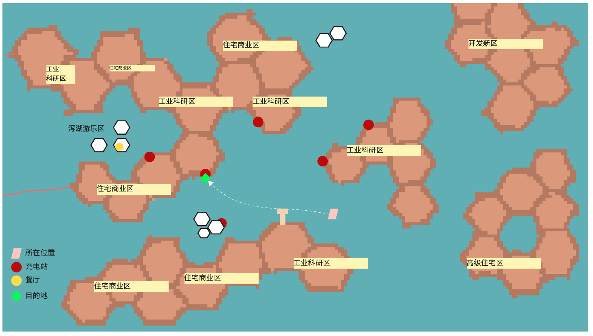
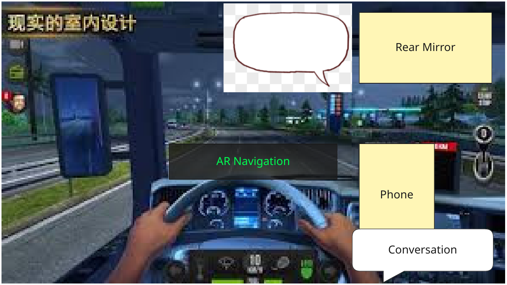
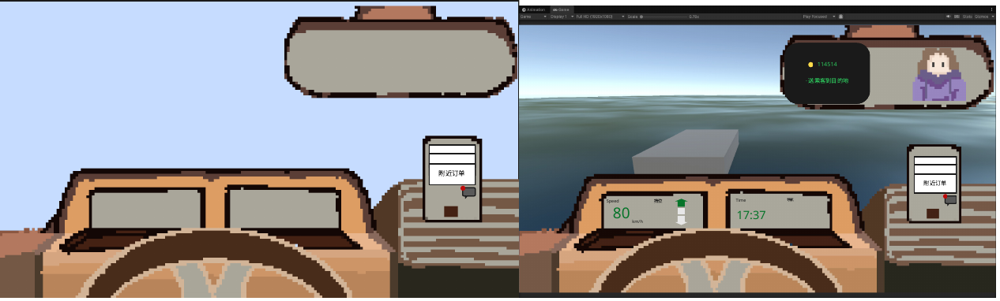
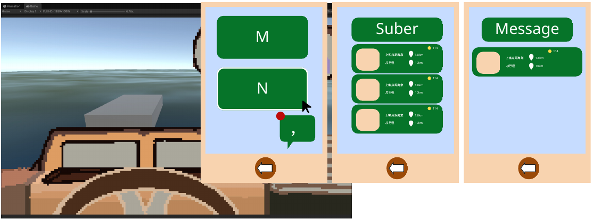

方向调整为「水上出租车司机」之后，我们重新从海上城市的日常生活出发，设计时间、乘客、驾驶和手机等系统。这一页整理了当时的设计。
目标人群与转变
- 目标人群：生活在韩国釜山的居民。釜山是一座正在用建造漂浮城市来应对海平面上升威胁的海滨城市。
- 转变：目标玩家从「对漂浮城市缺乏了解和认知，对搬迁到漂浮城市感到抗拒」，转变为「可以具体理解并想象漂浮城市中的日常生活方式」。玩家能更好地为自己的未来做决定：是搬去海上开始新生活，还是留在陆地。
| 阶段 | 玩家的状态 |
|---|---|
| 游戏前 | 对浮动城市缺乏了解和认识，抗拒迁居 |
| 游戏中 | 游戏展示浮动城市的生活方式 |
| 游戏后 | 能想象出浮动城市的日常生活是什么样子 |
为什么是出租车司机
我们讨论过四个和这个转变相符的方向：
- 渡轮模拟：玩家按时间表行动，一天中不同时段有不同的日常安排，通过角色对话推动转变。
- 出租船模拟（最终选择）：基本和渡轮模拟相同，但加入了「钱」，玩家需要相应地赚钱和花钱。
- 珊瑚养殖。
- 上班族的一天。
- 为了达成转变，我们需要一个视角，让玩家了解漂浮城市和陆地不同的生活方式。玩家需要穿梭在整个城市里，观察漂浮城市的生活和风景，出租车司机是一个比较好的视角，所以玩家将扮演一名司机。
- 我们不只希望玩家观察别人的生活，也希望玩家拥有自己的生活。加入这个额外的视角，也能增加代入感。为此，我们为玩家设计了时间表：上班时间接送各种乘客，和他们聊天、了解他们的生活；午休等时间，完成自己的日常安排。
- 乘客代表了漂浮城市里和陆地不同的新职业，让玩家了解漂浮城市的新可能性。每位乘客对搬到漂浮城市都有自己的看法，玩家可以通过这些看法更全面地审视自己的观点，由此产生转变。我们也希望通过塑造个性鲜明的乘客，让玩家感受到搬到漂浮城市也可以享受不同的生活，而不是被迫逃难。
从生活方式出发
我们把「海上城市的生活方式」拆成几个方面，并为每个方面写下想让玩家看到什么：
| 方面 | 想展示的内容 |
|---|---|
| 工作 | 展示并探索海上城市里出现的新职业 |
| 饮食 | 展示生活在海上的人日常能吃到的新食物 |
| 住所 | 展示可能的住所，以及社区的样子（7 层以下） |
| 娱乐 | 展示并探索海上城市里新的娱乐方式 |
| 灾害 | 展示「海上住宅」这个构想即使在灾害发生时也是安全的居住区域 |
| 通勤 | 展示玩家在城市里出行的各种方式：陆地模块上用自行车、滑板，海上区域用无人机、渡轮、双体船 |
游戏循环
构思白板上「出租船模拟器」的游戏循环草稿：
一天的流程
- 起床
- 接客（展示工作）
- 午休：午饭、娱乐（展示生活）、充电
- 接客（展示娱乐）
- 结算费用
- 回家睡觉
- 乘客人群：上学的、上班的、来自特定行业的；下班或放学的乘客会去泻湖。
- 功能：导航、城市地图、接单手机、交通规则。

时间系统：固定时间表还是自由时间
一天怎么安排，我们比较了两种方案：
| 方案 | 内容 |
|---|---|
| 固定事件时间表 | 上午：接待 2 组乘客；午休：午餐、船只充电、休整；下午：接待 2 组乘客；晚上：结束营业、结算 |
| 自由时间系统 | 玩家在自由流动的时间里接待乘客。船只电量不足时，下一个目的地自动设为最近的充电站，亏电时移动速度会变慢；每天 12 点完成当前订单后，下一个目的地强制设为午餐店；特殊乘客在固定的时间段出现，在某个时间范围内可以接到他们的订单 |
我的想法：固定时间表里的充电如果不需要玩家主动去做，会很无聊；我个人更支持自由时间。最终采用的是自由时间系统。
乘客设计
乘客主要是来自漂浮城市特色行业的员工，例如水培、能源公司、珊瑚养殖、漂浮奶牛场；也包括学生、退休人士、游客等其他居民。乘客分为长期乘客和一次性乘客。当时整理的角色、主题和地点如下：
| 内容 | |
|---|---|
| 角色 | Coral、Grandma、Student、晕船的上班族、Chef、Writer、Architect、Protester |
| 主题 | 生活空间、海洋污染、教育（年轻人视角，偏搞笑）、城市安全与新职业（能源回收）、饮食、老人视角与新职业（水培）、新职业（珊瑚养护）、生活成本、新国籍的好处 |
| 其他乘客构想 | 喜欢大自然、想去山里的人；渔船与钓鱼的便利和政策；漂浮奶牛场（和陆地不同）；在新能源公司工作的社恐科学家；抗拒科技的退休人士；看海景、找新体验的游客；找新拍照景点的留学生；网络不太稳定的游戏主播；寻找新体验和灵感的艺术家；面对不确定投资的企业家；不信任医疗资源的医生 |
| 地点 | 学校、回到岸上的码头、公园、住宅区、小吃街、街市、游乐场、温室、珊瑚培植场 |
在对话中体现的内容：居住环境狭小，但原本的居住环境也不大；医疗设施；国籍：漂浮城市是主题城市的辖区，不存在国籍问题；和原本的陆地城市也有关联。
乘客与对话系统
乘客状态机
- 上车
- 起始对话
- 中间对话
- 下车对话
- 下车
- 场景中只有唯一的乘客实例，场景和数据分离。
- 对话数据用字典储存，乘客对话的结构体包含「段落」和「引用」。
城市与生活系统
- 城市地图：六边形的城市模块，分为住宅商业区、工业科研区、高级住宅区、开发新区和泻湖游乐区，地图上标出充电站、餐厅、目的地和当前位置。
- 灾害系统：灾害来临时，玩家待在家中不出门。预设灾害日期，一个月一次，第一次台风在第 2 天；播放主角在家中安逸生活的动画：看电视，电视里在播报灾害新闻。
- 食物系统：通过司机的午餐体现漂浮城市的饮食结构：买午餐、在快餐店吃饭。漂浮城市的主要饮食是素食加海产品，强调和原来的居住环境没有太大不同。
- 经济系统：通过主角生活中的各种花费，理解陆地和漂浮城市物价的不同：能自主种植蔬菜，菜价变便宜（韩国的菜比较贵）；不生产动物性食品，肉和内脏相对较贵；能源可回收，价格相对便宜。体现方式：午餐时餐厅和小吃街提供不同价格的食物，同样的菜品用陆地蔬菜会比水培蔬菜贵；海鲜整体更便宜；假肉成为流行美食；只有庆祝的大日子才会吃烤肉。
- 娱乐：靠近陆地的泻湖中心有娱乐设施，玩家会把乘客送到这里游玩（展示游乐场）。
- 餐厅：司机到达特定地点后，进入 2D 餐厅场景点餐。


订单与导航
导航
- 点击地图上发光的位置
- 点击弹窗「导航到此处」
- 显示路线
- 退出地图
订单系统包括：在特定时间生成订单、显示路线、移除订单。
驾船设计
先研究了动力船的驾驶规则：
- 动力船靠船身下面的螺旋桨推动，有双引擎和单引擎。
- 船在海上前行会受到水流、风向等因素的影响。
- 严格来说，船本身无法停下，只有把锚抛到固定位置，船才会停止前进。
- 靠岸时：微调要在前进挡、空挡和倒挡之间短距离换挡，不要靠油门控制方向，那样很容易速度过快，小幅度换挡才能精准操控；最后接近时缓慢滑行，速度刚好足以保持控制，又不能太快以免碰撞；根据实际情况调整角度，如果船头有风，要以更锐利的角度接近。
设计原则：操纵简单，同时保留海上航行的乐趣。当时提出了三种操控方案：
- 右键油门，只控制油门和方向。
- 自动航行，只控制油门；路上有别的船只需要规避。
- 按住前后键加速，松开则保持当前速度，需要减速或完全停下时按抛锚键；转向以固定的角速度缓慢旋转，松开后停止旋转。
另外，按下 Shift 可以切换成更快的加速度和更高的速度上限。
驾驶界面与手机


- 信息显示：时间（月、日、星期）；余额（0 到 107−1）；当前任务（前往目的地、拍照、去吃午饭、去充电）；仪表盘导航显示到目的地的距离和偏转方向。
- 手机：驾驶界面上能看到手机的缩略图，不接单时显示订单和新短信；按 M 打开手机。手机里有网约船软件 Suber（查看具体订单和距离）、短信（聊天、缴费、灾害信息，在对话界面可以给好友拍照）和地图（查看地图和导航）。可以用快捷键或点击图标打开软件，点屏幕下方的 Home 键或按 Esc 返回上一级；鼠标放在可交互的元素上会显示白色边框。




日程与其他功能
- 日程系统：玩家从 2030 年 1 月 14 日开始生活。每天早上 9 点开始接客，18 点下班；12 点到 2 点是午餐时间，可以导航到最近的餐厅吃午饭。如果过了 2 点，当前这单结束后会自动导航到下一个锚点。
- 拍照系统：接待特殊乘客后，玩家会在目的地拍照。例如剧情一开始，好友打电话来，好奇你搬去的浮城是什么样子，希望你发几张照片过去。
- 跳过与自动驾驶：玩家可以使用跳过功能。
其中一部分设计在 Alpha 阶段实现了，见下一条记录。
内容整理自团队的 Miro 设计板和构思白板。